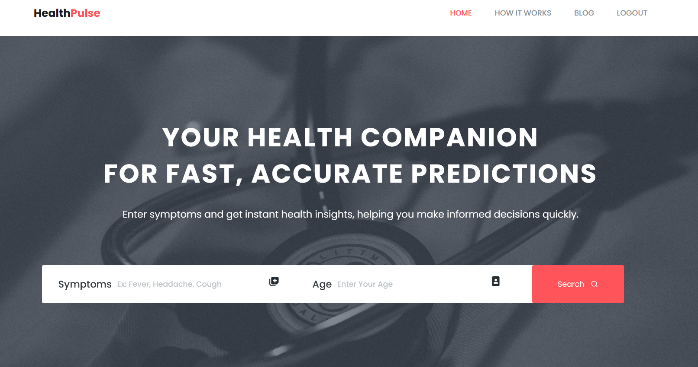
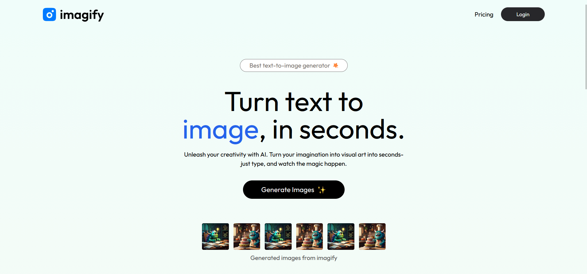

Intro

Hi, I’m Sakshi Naravankar — an MCA student and aspiring
full-stack developer with a strong interest in building clean, scalable,
and intelligent web applications.
I enjoy working across the full development stack, from designing intuitive
user interfaces to building robust backend systems and integrating
machine learning models into real-world applications.
My projects reflect a blend of problem-solving, creativity, and technical
depth, ranging from AI-powered platforms to full-stack web systems.
Explore my projects to see what I’ve been building.
Projects
HealthPulse
A smart health prediction system using machine learning to analyze
symptoms and provide instant insights.
Imagify
An AI-powered text-to-image SaaS application with authentication,
credit system, and payment integration.
StudyNexus
A virtual classroom platform supporting assignments, discussions,
and secure user authentication.

HealthPulse is a machine learning–based web application designed
to assist users in identifying potential health conditions based on the symptoms
they experience. The platform focuses on providing fast, data-driven insights
that can help users decide when professional medical consultation may be needed.
The system bridges the gap between raw symptom input and intelligent analysis
by combining a clean web interface with trained machine learning models.
HealthPulse prioritizes usability, accuracy, and clarity over complex medical jargon,
making it accessible to non-technical users.
Problem Statement:
Many individuals ignore early symptoms due to lack of awareness or access to
immediate medical guidance. HealthPulse aims to provide a preliminary health
assessment tool that encourages timely action without replacing professional care.
Key Features
- Symptom-based disease prediction using trained ML models
- Fast and intuitive symptom input interface
- Real-time prediction results with clear output
- Web-based access without additional installations
System Workflow:
- User selects or enters symptoms through the web interface
- Input data is preprocessed and formatted on the backend
- Machine learning model analyzes symptom patterns
- Predicted disease results are displayed to the user
Machine Learning Details:
The prediction model was trained on a structured dataset containing symptom–disease
relationships. Feature encoding and model optimization techniques were applied
to improve prediction reliability and response time.
Tech Stack:
Python, Flask, Machine Learning, MySQL, HTML, CSS
Learning Outcomes:
- End-to-end ML model integration with a web application
- Backend development using Flask and REST-style routing
- Handling real-world data preprocessing challenges
- Designing user-centric interfaces for technical systems
Imagify

Imagify is an AI-powered text-to-image SaaS application that
allows users to generate high-quality images from natural language prompts.
The platform is designed as a complete end-to-end product, combining AI
capabilities with modern full-stack development practices.
The application focuses on usability, scalability, and monetization by
integrating secure authentication, a credit-based usage model, and online
payment support. Imagify demonstrates how AI services can be transformed
into a production-ready SaaS platform.
Problem Statement
Most AI image generation tools lack structured usage control and seamless
user experience. Imagify addresses this by providing a managed platform
where users can generate images responsibly while tracking usage through
a credit system.
Key Features
- AI-based text-to-image generation using external AI APIs
- Secure user authentication and account management
- Credit-based image generation system
- Integrated online payment gateway for purchasing credits
- Responsive and user-friendly web interface
System Workflow
- User logs in or creates an account
- User enters a text prompt for image generation
- Backend validates available credits
- AI API processes the prompt and generates an image
- Credits are deducted and the image is displayed to the user
AI Integration Details
Imagify integrates an external AI image generation API to convert text prompts
into images. API request handling, error management, and response optimization
were implemented to ensure reliable performance and minimal latency.
Tech Stack
MongoDB, Express.js, React, Node.js (MERN Stack), Clipdrop API
Learning Outcomes
- Building a full-stack SaaS application using the MERN stack
- Integrating third-party AI APIs into production systems
- Implementing authentication and secure payment workflows
- Designing scalable backend services for AI-powered features
StudyNexus

StudyNexus is a virtual classroom platform designed to support
structured online learning through secure access, assignment management,
and interactive discussions. The system aims to replicate essential
classroom functionalities in a digital environment.
The platform focuses on simplifying course coordination between students
and instructors by centralizing academic resources, submissions, and
communication within a single web-based application.
Problem Statement
Traditional online learning platforms often lack cohesion between lectures,
assignments, and student interaction. StudyNexus addresses this gap by
providing a unified system that supports academic engagement and content
management in a structured manner.
Key Features
- Secure user authentication for students and instructors
- Assignment upload and submission management
- Interactive discussion modules for course engagement
- Centralized access to course materials and announcements
- Web-based platform accessible across devices
System Workflow
- User logs in using secure credentials
- Instructor uploads course content and assignments
- Students view materials and submit assignments
- Discussions enable interaction between peers and instructors
- System stores and manages academic data securely
Backend & Database Design
StudyNexus uses server-side Java Servlets to handle authentication,
request processing, and business logic. A relational database is used
to manage user profiles, course data, assignments, and submission records
with structured relationships.
Tech Stack
Java Servlets, JDBC, MySQL, HTML, CSS
Learning Outcomes
- Building server-side applications using Java Servlets
- Designing relational database schemas for real-world systems
- Implementing secure authentication and session management
- Developing scalable academic platforms for online learning
About Me
I’m Sakshi Naravankar, an MCA student and aspiring full-stack
developer with a strong interest in building intelligent, user-focused web
applications. I enjoy working at the intersection of technology, creativity,
and problem-solving.
My academic journey has helped me develop a solid foundation in web
development, backend systems, and machine learning. I like breaking down
complex ideas into clean, practical solutions that are easy to use and
scalable in real-world environments.
I have hands-on experience working with full-stack technologies such as
the MERN stack, Python-based web frameworks, and Java backend systems.
Through my projects, I’ve explored AI-driven applications, SaaS platforms,
and virtual learning systems.
Connect